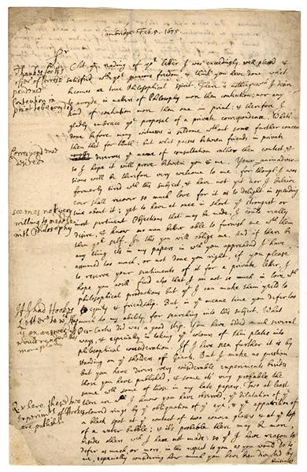
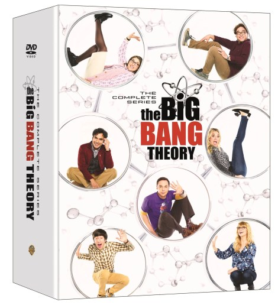
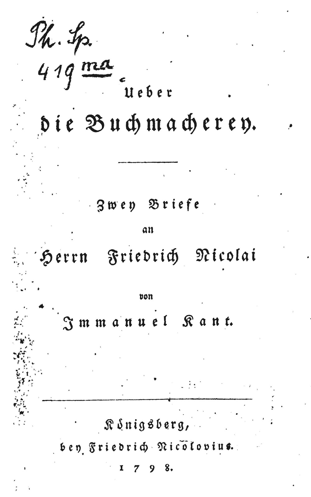
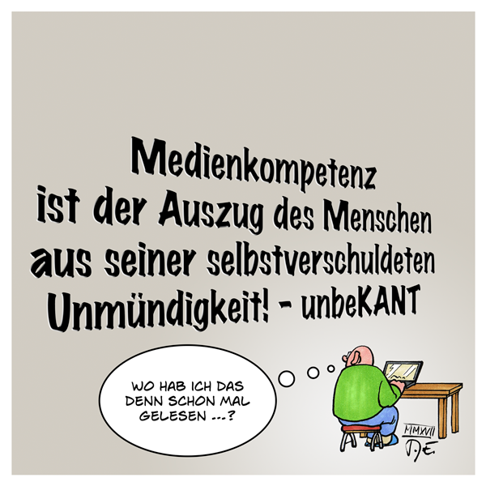

40:11 · 10 OPERE
C'erano una volta scienza e coscienza...
Il filo del discorso
La frase di Newton sulle spalle dei giganti apre una riflessione sul sapere come dialogo fra generazioni e sulla modestia richiesta a chi cerca di capire. Il relatore contrappone questa immagine alla comunicazione contemporanea, che giudica capace di ridurre scienziati e problemi complessi a icone e slogan. Einstein e una battuta di The Big Bang Theory introducono la distinzione fra argomentazione, credenza e verifica dei fatti.
Leggi la sintesi completaRiduci la sintesi
La parte centrale applica il tema alla pandemia: il relatore contesta il linguaggio sulle maggioranze vaccinate, commenta parole attribuite al primo ministro israeliano Naftali Bennett e legge una lettera di We for Humanity alle agenzie regolatorie. Le affermazioni sanitarie della lettera restano attribuite ai promotori; la scheda distingue segnalazioni sospette, eventi da sorvegliare ed effetti causalmente dimostrati. Il ritorno a Kant offre la chiave conclusiva: nelle lettere a Friedrich Nicolai il relatore trova un avvertimento sui costi dell’imparare soltanto attraverso il danno. Il contesto originale è una discussione politica e filosofica, che qui viene rielaborata per interrogare il presente. Una vignetta di Timo Essner, che adatta il motto dell’Illuminismo alla competenza mediatica, chiude il percorso fra testi antichi e uso autonomo del giudizio.
I libri nel discorso

Lettera a Robert Hooke del 5 febbraio 1675/76
Note sul riferimento
Facsimile: prima pagina della lettera: Lettera a Robert Hooke, Cambridge, 5 febbraio 1675/76 secondo la doppia indicazione dell’anno inglese; comunemente datata 5 febbraio 1676. Facsimile della prima pagina del manoscritto conservato dalla Historical Society of Pennsylvania, riprodotto dalla Linda Hall Library.
Riproduzione autentica vista integralmente: pagina manoscritta con data in alto e annotazioni marginali. La didascalia della Linda Hall Library la identifica come prima pagina della lettera a Hooke; non è una copertina né il frontespizio dei Principia. La provenienza dell’immagine è la pagina della biblioteca indicata tra le fonti.
Newton, lettera e motto sulle spalle dei giganti espliciti; destinatario e data identificati dalla citazione.

The Big Bang Theory
Note sul riferimento
Confezione homevideo: The Complete Series: Serie statunitense 2007–2019, dodici stagioni, 279 episodi. Immagine della raccolta Warner The Complete Series in DVD, uscita statunitense 12 novembre 2019, UPC 883929657988; non stagione isolata né libro.
Confezione completa DVD vista integralmente: fondo bianco, personaggi dentro cerchi e titolo The Big Bang Theory / The Complete Series, marchio Warner sul dorso. Fotografia promozionale presente insieme al comunicato originale Warner; non è la copertina della sola dodicesima stagione. La custodia raffigurata appartiene all’edizione del 2019, distinta dalla ristampa del 2021.
The Big Bang Theory e personaggio Zack espliciti; ricordata la battuta sull’assenza di una sola risposta giusta.

1984
Note sul riferimento
Copertina: Newton Compton · edizione illustrativa
1984 esplicito fra i due libri consigliati nel marzo dell’anno precedente.

Il mondo nuovo
Note sul riferimento
Copertina della raccolta: Mondadori · Oscar Moderni · 2016
L’immagine mostra il volume Mondadori che riunisce Il mondo nuovo e Ritorno al mondo nuovo. Il collegamento nel video riguarda il primo romanzo, per allusione al titolo inglese; non identifica un’edizione usata dal relatore.
Brave New World e Huxley espliciti, con il nome dell’autore deformato dalla trascrizione automatica.

La ballata delle madri
Note sul riferimento
Copertina della raccolta: Garzanti · 2001
La ballata delle madri è contenuta in Poesia in forma di rosa. L’immagine mostra la raccolta Garzanti del 2001, con prefazione di Edoardo Esposito, non un volume autonomo della poesia né l’edizione del video.
Pasolini e La ballata delle madri espliciti con il richiamo alle madri dei destinatari della polemica.

Codice di Norimberga (The Nuremberg Code)
Note sul riferimento
Pagina del documento: riproduzione MIT: Dieci principi formulati nel verdetto del processo ai medici del 1947. Testo ripubblicato in Trials of War Criminals before the Nuernberg Military Tribunals, volume II, U.S. Government Printing Office, 1949, pp. 181–182. Immagine della prima pagina della riproduzione distribuita dal MIT nel corso STS.011, autunno 2007.
Vista integralmente la pagina PDF 2 della lettura MIT: titolo The Nuremberg Code, credito alla pubblicazione governativa del 1949, intestazione sui crimini contro l’umanità e inizio dei principi Permissible Medical Experiments. È una riproduzione didattica con numero di pagina 313, non una copertina, un frontespizio del 1947 o una scansione diretta della pagina 181 del volume governativo.
Codice di Norimberga esplicito nella lettura della lettera di We for Humanity.

Über die Buchmacherei. Zwei Briefe an Herrn Friedrich Nicolai
Note sul riferimento
Frontespizio: edizione del 1798: Königsberg, Friedrich Nicolovius, 1798, 22 pagine; Akademie-Ausgabe VIII, pp. 433–438. Facsimile del frontespizio della prima edizione riprodotto nella bibliografia universitaria di Steve Naragon; non copertina esterna.
Frontespizio autentico visto integralmente: Ueber die Buchmacherey, Zwey Briefe an Herrn Friedrich Nicolai, Immanuel Kant, Königsberg, Friedrich Nicolovius, 1798; presenti segnature manoscritte dell’esemplare digitalizzato. Ortografia storica conservata nell’immagine e titolo modernizzato nella voce.
Due lettere a Friedrich Nicolai, titolo Über die Buchmacherei e passo sul principio pragmatico espliciti.

Metafisiche del mondo
Note sul riferimento
Copertina: Copertina riprodotta nella recensione di Domenico Conversa
Metafisiche del mondo esplicito come libro del relatore, con una frase sulla porzione di mondo davanti agli occhi.

Risposta alla domanda: che cos’è l’Illuminismo?
Note sul riferimento
Copertina della raccolta che comprende il saggio sull’Illuminismo: Firenze University Press · Sette scritti politici liberi · 2011 · a cura di Maria Chiara Pievatolo
Copertina del volume cartaceo FUP che comprende il saggio, riscontrato dal catalogo universitario. L’ISBN appartiene alla raccolta; il filmato non annuncia un’edizione e il titolo del saggio è un’identificazione probabile della citazione.
Testo sulla domanda che cosa significa Illuminismo esplicito; richiamato ancora nella chiusura sulla minorità.

Medienkompetenz
Note sul riferimento
Vignetta originale: Timo Essner, 2017: Vignetta digitale pubblicata il 24 gennaio 2017 nel sito di Timo Essner. UnbeKANT è la firma giocosa della rielaborazione della frase kantiana, non l’autore del testo filosofico né una rivista qui accertata.
Immagine originale intera, vista: campo grigio, adattamento del motto di Kant, firma unbeKANT, lettore davanti al computer e fumetto sul ricordo di avere già letto quella frase; firma T. E. e anno MMXVII. Non è una copertina libraria né una pagina scritta da Kant.
Parafrasi kantiana sulla Medienkompetenz, firma unbeKANT e fumetto sul ricordarsi della frase descritti nel finale; immagine riscontrata nel sito di Timo Essner.